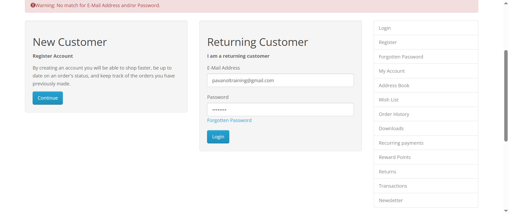

-
Login with Valid Credentials
9:51:18 AM / 00:00:55:564 Fail
Login with Valid Credentials
08.05.2025 9:51:18 AM 08.05.2025 9:52:13 AM 00:00:55:564 · #test-id=1FailSuccessful Login with Valid CredentialsGiven the user navigates to login pageWhen user enters email as "pavanoltraining@gmail.com" and password as "test@123"And the user clicks on the Login buttonThen the user should be redirected to the MyAccount PagestepDefinitions.Hooks.addScreenshot(io.cucumber.java.Scenario)Successful Login with Valid CredentialsFailLogin Data DrivenPassLogin Data DrivenGiven the user navigates to login pageWhen user enters email as "shriramlande21@gmail.com" and password as "Pari@123"And the user clicks on the Login buttonThen the user should be redirected to the MyAccount PageFailLogin Data DrivenGiven the user navigates to login pageWhen user enters email as "pavanoltraining@gmail.com" and password as "test@123"And the user clicks on the Login buttonThen the user should be redirected to the MyAccount PagestepDefinitions.Hooks.addScreenshot(io.cucumber.java.Scenario) -
Account Registration
9:52:13 AM / 00:00:20:732 Fail
Account Registration
08.05.2025 9:52:13 AM 08.05.2025 9:52:34 AM 00:00:20:732 · #test-id=36FailSuccessful Account RegistrationGiven the user navigates to Register Account pagestepDefinitions.Hooks.addScreenshot(io.cucumber.java.Scenario)When the user enters the details into below fieldsfirstName John lastName Kenedy telephone 1234567890 password Pari@123 Step skippedAnd the user selects Privacy PolicyStep skippedAnd the user clicks on Continue buttonStep skippedThen the user account should get created successfullyStep skipped
-
org.openqa.selenium.NoSuchWindowException
1 tests
org.openqa.selenium.NoSuchWindowException
1 failedStatus Timestamp TestName Fail 09:52:13 AM stepDefinitions.Hooks.addScreenshot(io.cucumber.java.Scenario) Login with Valid Credentials.Login Data Driven.stepDefinitions.Hooks.addScreenshot(io.cucumber.java.Scenario) -
org.openqa.selenium.remote.UnreachableBrowserException
2 tests
org.openqa.selenium.remote.UnreachableBrowserException
2 failedStatus Timestamp TestName Fail 09:52:18 AM Given the user navigates to Register Account page Account Registration.Successful Account Registration.Given the user navigates to Register Account pageFail 09:52:34 AM stepDefinitions.Hooks.addScreenshot(io.cucumber.java.Scenario) Account Registration.Successful Account Registration.stepDefinitions.Hooks.addScreenshot(io.cucumber.java.Scenario) -
java.lang.AssertionError
2 tests
java.lang.AssertionError
2 failedStatus Timestamp TestName Fail 09:51:33 AM Then the user should be redirected to the MyAccount Page Login with Valid Credentials.Successful Login with Valid Credentials.Then the user should be redirected to the MyAccount PageFail 09:52:07 AM Then the user should be redirected to the MyAccount Page Login with Valid Credentials.Login Data Driven.Then the user should be redirected to the MyAccount Page
-
@regression
4 tests
@regression
1 passed 3 failedStatus Timestamp TestName Fail 09:51:18 AM Successful Login with Valid Credentials Login with Valid Credentials.Successful Login with Valid CredentialsPass 09:51:45 AM Login Data Driven Login with Valid Credentials.Login Data DrivenFail 09:51:57 AM Login Data Driven Login with Valid Credentials.Login Data DrivenFail 09:52:13 AM Successful Account Registration Account Registration.Successful Account Registration -
@sanity
1 tests
@sanity
1 failedStatus Timestamp TestName Fail 09:51:18 AM Successful Login with Valid Credentials Login with Valid Credentials.Successful Login with Valid Credentials
Started
Aug 5, 2025 09:51:15 AM
Ended
Aug 5, 2025 09:52:34 AM
Features Passed
0
Features Failed
2
Features
Scenarios
Steps
Timeline
Tags
| Name | Passed | Failed | Skipped | Others | Passed % |
|---|---|---|---|---|---|
| @regression | 1 | 3 | 0 | 0 | 25% |
| @sanity | 0 | 1 | 0 | 0 | 0% |